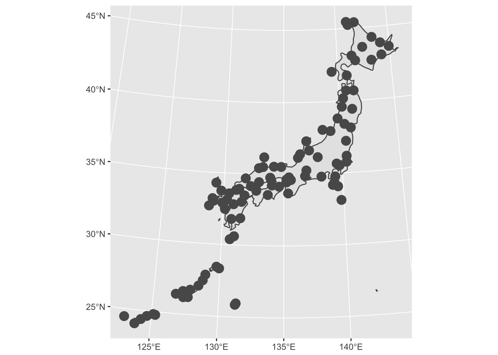
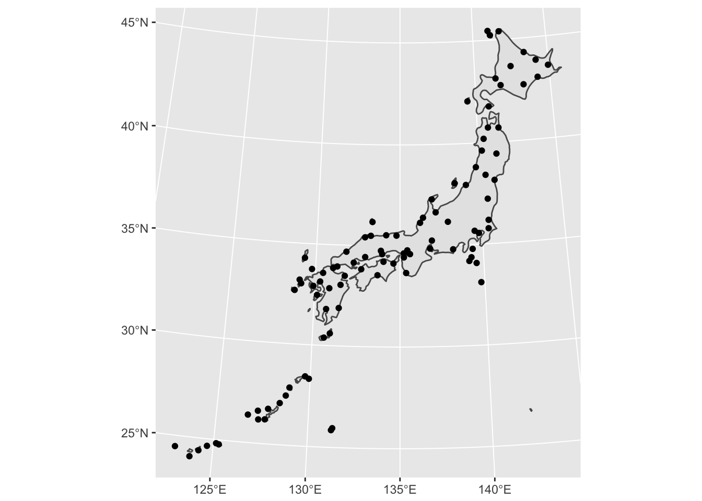
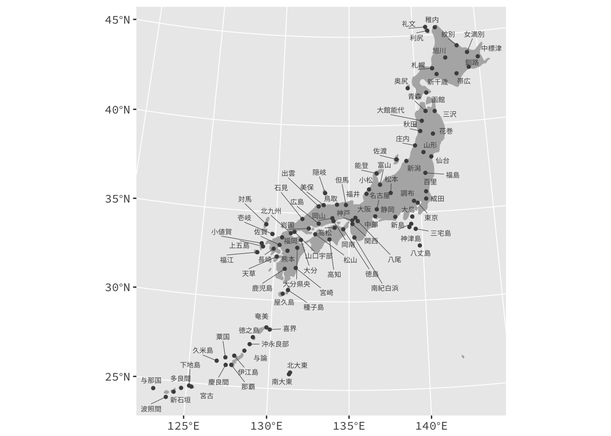

はじめに
Rで地理情報を扱うのにmatptoolsパッケージを使っていたのですが， いつの頃からか，例えばreadShapePoly()でShapeファイルを読み込もうとすると，
use rgdal::readOGR or sf::st_read という警告メッセージが表示されるようになりました。 またsfはggplot（というかtidyverse）と親和性が高いらしいということもあり， sfを試すことにしました。
library(tidyverse)
library(sf)データ
地図データ（海岸線データ）は，Natural EarthのデータをRで利用するrnaturalearthパッケージで入手することにします。 また，ポイントデータとして，国土数値情報からダウンロードした空港の位置データ（空港時系列データ）を例に使います。
また，空港データは，現在共用中の空港のデータだけに絞っておきます。
library(rnaturalearth)
coastline <- ne_countries(scale = 50, country = "japan", returnclass = "sf")
airport <- st_read("~/Downloads/N08-16_GML/N08-16_AirportPoint.shp", options = c("ENCODING=CP932")) %>%
filter(N08_023 == 9999)それっぽい地図にするために，投影変換しておきます。
lambert <- "+proj=lcc +lat_1=30 +lat_2=40 +lat_0=35 +lon_0=135 +datum=WGS84 +units=km +no_defs"
coastline <- st_transform(coastline, lambert)
airport <- st_transform(airport, lambert)地図描画
とりあえず，そのままggplot::geom_sf()を使ってプロットしてみます。
ggplot() + geom_sf(data = coastline) + geom_sf(data = airport)
デフォルトできれいなグラフを描くggplotしては，あまりよい地図には見えません。 特に，ポリゴンデータ（海岸線データ）はそれなりに描画してくれていますが，ポイントデータ（空港データ）はあまりうまく扱えないようです。
そこで，ポイントデータについでは，geom_sf()の利用をあきらめ，geom_point()でプロットすることにします。 そのために，st_coordinates()を使って，sfデータから緯度経度の情報を抜き出してデータフレームを作ります。
airport_df <- airport %>% st_coordinates() %>% as.tibble()
ggplot() + geom_sf(data = coastline) + geom_point(aes(x = X, y = Y), data = airport_df) +
theme(axis.title = element_blank())
何とかそれらしい地図になってきました。 あとは，色やサイズを調整したりggrepelパッケージを使って空港名を書き込んだりしたら完成です。
library(stringr)
airport_df <- airport_df %>%
mutate(name = str_replace_all(airport$N08_019, "国際|空港|飛行場", ""))
library(ggrepel)
ggplot() +
theme_gray(base_family = "SourceHanCodeJP-Regular") +
geom_sf(data = coastline, fill = gray(.7), colour = gray(.7)) +
geom_point(aes(x = X, y = Y), data = airport_df, colour = gray(.3), size = 1) +
geom_text_repel(aes(x = X, y = Y, label = name), colour = gray(.3),
data = airport_df, family = "SourceHanCodeJP-Regular",
segment.size = .2, size = 2) +
theme(axis.title = element_blank())